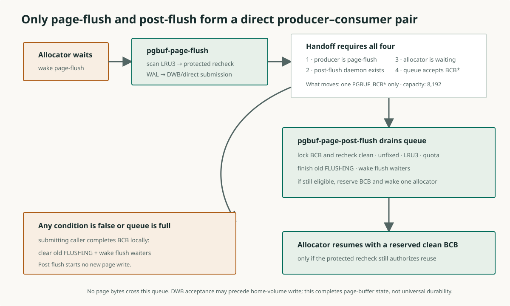
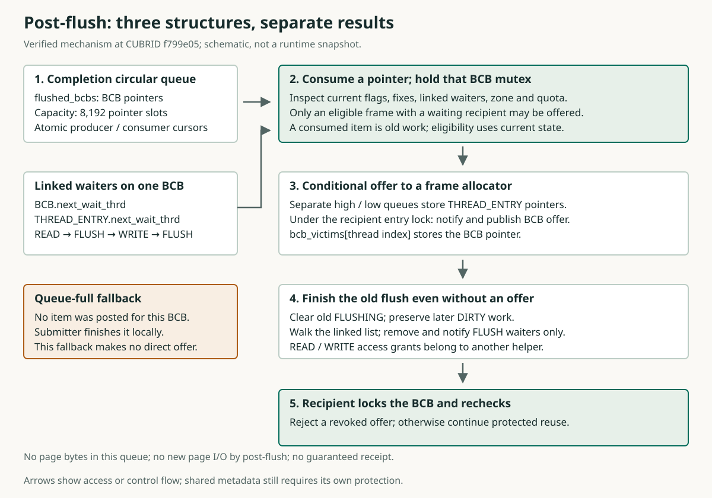

페이지를 썼는데, 왜 메모리 칸은 아직 못 줄까?
데이터베이스는 데이터를 일정한 크기의 덩어리로 읽고 씁니다. 이 덩어리를 페이지라고 합니다. 지금 볼 페이지의 이름은 P입니다. P는 메모리의 한 칸에 들어 있습니다. 페이지 한 개를 담는 이 칸을 프레임이라고 합니다.
한 요청이 P의 내용을 바꾼 뒤 사용을 끝냈습니다. 백그라운드 작업자가 바뀐 내용을 복사해서 쓰기 경로로 보냈고, 그 호출이 성공했습니다. 메모리 내용을 쓰기 경로로 보내는 작업을 flush라고 부릅니다.
다른 요청은 새 페이지를 읽을 칸이 필요합니다. 그런데 쓰기 호출이 끝났다고 P가 있던 칸이 저절로 비지는 않습니다. 그 칸에는 여전히 P가 있고, 프로그램의 마무리 작업도 남아 있습니다.
무엇이 남았을까요? 이번 flush를 마무리해야 합니다. 지금 이 칸을 넘겨도 되는지 확인해야 합니다. 넘겨받을 요청도 마지막으로 확인해야 합니다. 이 과정을 한 단계씩 따라가겠습니다.
여기서 ‘쓰기 성공’은 쓰기 경로의 호출이 성공했다는 뜻입니다. 중간 저장 영역이 사본을 받아둔 경우도 있으므로, 최종 디스크 위치에 영구 보관됐다는 뜻으로 읽으면 안 됩니다.
사례들은 소스를 바탕으로 구성한 설명입니다. 실제 실행을 측정한 결과가 아닙니다. 먼저 정상 흐름을 읽고, 세 가지 다른 상황을 비교합니다. 소스와 세부 정책은 뒤의 상세 설명에서 펼쳐 볼 수 있습니다.
소스와 관련 설명 펼치기
“이번 쓰기를 마쳐 주세요”와 “빈 칸을 주세요”
프레임 옆에는 “어떤 페이지가 있는가, 누가 사용하는가, 어떤 작업이 남았는가”를 관리하는 기록이 있습니다. 이 제어 기록의 이름이 BCB(buffer control block)입니다.
BCB의 FLUSHING 표시는 이번 flush의 마무리가 아직 남았다는 뜻입니다. 쓰기 호출이 성공한 뒤에도 마무리 담당자가 이 표시를 지워야 합니다.
프로그램 안에서 작업을 따로 진행하는 실행 흐름을 스레드라고 합니다. 기다리는 스레드들은 서로 다른 결과가 필요합니다.
| 누가 기다리나요? | 무엇을 기다리나요? |
|---|---|
| Flush 대기자(flush 완료를 기다리는 요청 스레드) | “이 페이지에서 이미 진행 중인 flush가 끝나기를 기다립니다.” 그 flush의 마무리가 끝나서 대기 절차를 이어갈 수 있기를 기다립니다. |
| Allocator(프레임 할당 요청 스레드) | “다른 페이지를 읽어 담을 프레임을 주세요.” 자신이 넘겨받아 쓸 수 있는 프레임을 기다립니다. |
Post-flush 데몬은 넘겨받은 BCB의 마무리를 하고 flush 대기자를 깨우는 실행 주체입니다. 프레임을 allocator에게 제안할 수 있는지도 따로 검사합니다. 따라서 flush 대기자를 깨우는 일과 allocator에게 칸을 주는 일은 별개입니다. 깨우기는 다시 실행할 기회를 주는 알림입니다. 알림만으로 쓰기 성공이나 칸 확보가 증명되지는 않습니다.
다음 정상 사례에는 이 프레임에 연결된 대기자가 없습니다. 연결된 flush 대기자가 있으면 이번 검사에서 칸을 직접 제안하지 않습니다. 그 경우는 정상 흐름을 읽은 뒤 따로 살펴봅니다.
소스와 관련 설명 펼치기
1. 페이지 사본의 쓰기 호출이 성공한다
정상 사례의 시작입니다. 페이지 P가 프레임 한 칸에 있습니다. 바뀐 내용의 사본을 쓰는 백그라운드 스레드를 page-flush라고 합니다. 다른 요청인 allocator는 쓸 칸을 기다립니다. 이 사례가 끝날 때까지 다른 요청은 P의 상태를 바꾸지 않습니다.
일어난 일: Page-flush가 P의 사본을 쓰기 경로로 보냈고, 호출이 성공했습니다. 그 뒤 P에 새 수정은 없습니다. 이렇게 추가로 써야 할 수정이 없는 상태를 clean이라고 합니다.
남은 일: P는 여전히 그 칸에 있습니다. 제어 기록인 BCB에는 FLUSHING=1이 남아 있습니다. 1은 이번 flush의 마무리가 아직 남았다는 뜻입니다.
지금 결과: 사본의 쓰기 호출은 성공했습니다. 마무리는 아직 끝나지 않았고, allocator도 칸을 받지 못했습니다. 다음 단계에서 같은 칸을 계속 따라갑니다.
소스와 관련 설명 펼치기
2. 메모리 칸의 기록을 마무리 담당자에게 넘긴다
같은 정상 사례를 이어갑니다. 페이지 P의 사본 쓰기는 성공했습니다. 그 칸의 제어 기록인 BCB에는 마무리가 남았다는 FLUSHING=1이 있습니다. Allocator는 아직 칸을 기다립니다.
마무리를 도와주는 별도 백그라운드 스레드가 post-flush입니다. 두 스레드 사이에는 처리할 항목을 넣고 꺼내는 큐가 있습니다. 이 큐의 이름은 flushed_bcbs입니다.
넘기는 것: Page-flush는 큐에 BCB 포인터를 넣습니다. 포인터는 “어느 칸의 기록을 처리할지” 가리킵니다. 페이지 내용의 사본을 이 큐로 다시 보내는 것이 아닙니다.
이 사례에는 post-flush가 있고, allocator가 기다리며, 큐에 자리가 있습니다. 제출자는 page-flush입니다. 이 네 조건이 맞아 위임에 성공합니다. 하나라도 맞지 않으면 제출한 스레드가 직접 마무리합니다.
Page-flush는 post-flush를 깨웁니다. 이는 실행할 기회를 주는 알림입니다. 그 자리에서 post-flush의 함수를 직접 호출하지는 않습니다. 큐에 들어간 포인터가 남은 작업을 기록합니다.
지금 결과: 마무리 담당자가 바뀌었습니다. 마무리 자체는 아직 남았고 allocator도 계속 기다립니다. Post-flush는 이 항목을 처리하면서 새 페이지 쓰기를 시작하지 않습니다.
3. 지금 넘겨도 되는지 확인하고, 제안과 마무리를 한다
같은 정상 사례입니다. 페이지 P의 제어 기록인 BCB 포인터가 큐에 있습니다. P에는 새 수정이 없고, 현재 사용하는 요청도 없습니다. BCB에 연결된 대기자나 다른 재사용 방해 표시도 없습니다. P는 교체 후보 구역에 있고 현재 정책도 이 칸의 전달을 허용합니다. Allocator는 계속 기다립니다.
왜 다시 볼까요? 큐에 넣은 뒤 다른 요청이 페이지를 쓰거나 수정할 수 있기 때문입니다. 쓰기 성공은 과거의 사본에 관한 결과입니다. 지금 메모리 칸의 상태까지 보장하지 않습니다.
Post-flush는 큐에서 포인터를 꺼냅니다. 이어 BCB에 잠금을 잡고 현재 상태를 확인합니다. 이 잠금인 mutex는 상태에 대한 검사와 결정을 함께 보호합니다.
이번에는 검사를 통과합니다. Post-flush는 여전히 기다리는 allocator 하나에게 “이 칸을 받아 보세요”라는 제안을 기록하고 알립니다. 제안은 나중에 취소될 수 있습니다.
소스의 실제 순서: 현재 상태를 먼저 검사합니다. 제안에 성공하는 분기에서 제안 표시를 설정하면서 FLUSHING도 함께 지웁니다. 공통 마무리에서는 이 표시가 지워졌는지 확인하고, flush 대기자가 있으면 깨운 뒤 BCB 잠금을 풉니다. 이번 사례에는 연결된 대기자가 없습니다.
지금 결과: 이전 flush의 마무리가 끝났고 칸이 제안됐습니다. Allocator가 칸을 받은 것은 아직 아닙니다. 받는 쪽의 검사가 남았습니다.
이번 사례의 정확한 교체 정책 보기
P는 shared LRU3에 있습니다. LRU는 페이지 교체 순서를 관리하는 목록이며, LRU3는 그중 차가운 교체 후보 구역입니다. Shared 목록이므로 private 목록의 보유 목표인 quota 검사는 적용되지 않습니다. 미반납 사용 보호인 fix도 없습니다.
소스와 관련 설명 펼치기
4. 받는 요청이 확인한 뒤, 이전 페이지를 빼고 칸을 쓴다
같은 정상 사례의 마지막입니다. Post-flush가 페이지 P의 칸을 allocator에게 제안하고 BCB 잠금을 풀었습니다. P에는 새 수정도 새 사용자도 없습니다. 연결된 대기자가 없고, 제안도 취소되지 않았습니다.
왜 또 확인할까요? 제안과 수신 사이에도 다른 요청이 먼저 P를 사용할 수 있습니다. “제안했다”와 “받았다”는 서로 다른 시점입니다.
- Allocator가 자기 제안 포인터를 가져옵니다. 그 칸의 BCB를 잠그고 제안이 취소되지 않았는지 확인합니다.
- 현재 교체 조건을 다시 확인합니다. 이번에는 통과합니다. Allocator는 BCB를 교체 목록에서 빼고, 잠금을 유지한 채 할당 절차에 넘깁니다.
- 할당 절차가 이전 페이지의 식별자를 제거합니다. P를 찾을 때 이 칸으로 연결되던 이전 매핑을 지웁니다. 그 뒤 요청한 새 페이지를 위한 칸으로 확보할 수 있습니다.
최종 결과: 이번에는 allocator가 사용할 칸을 얻었습니다. 쓰기 성공, 마무리, 현재 상태 검사, 제안, 수신 검사와 이전 식별자 제거가 모두 이어졌기 때문입니다.
다음 사례들은 이 성공 이후에 이어지는 사건이 아닙니다. 각 사례의 시작 상태를 새로 설정합니다.
소스와 관련 설명 펼치기
한쪽 대기가 끝나도, 빈 칸을 기다리는 요청은 남는다
별개의 시작 상태입니다. 페이지 P의 사본 쓰기가 성공했고 BCB 포인터가 완료 큐에 들어 있습니다. P에는 새 수정이나 사용자가 없습니다. 교체 정책과 다른 표시도 전달을 막지 않습니다. 이번에는 flush의 마무리를 기다리는 스레드가 BCB에 연결돼 있습니다. Allocator는 별도로 칸을 기다립니다.
일어난 일: Post-flush가 BCB를 잠그고 검사합니다. 연결된 flush 대기자가 있으므로 이번 검사에서는 allocator에게 칸을 제안하지 않습니다.
그래도 하는 일: Post-flush는 이전 FLUSHING 표시를 지우고 flush 대기자를 목록에서 빼서 깨웁니다. 그 뒤 BCB 잠금을 풉니다.
결과: Flush 대기자는 대기 절차를 이어갈 수 있습니다. Allocator는 이번 회차에 칸을 제안받지 못했습니다. 이후의 전달 기회나 다른 공급자가 필요합니다.
한 페이지의 flush를 기다리는 스레드와 칸을 찾는 allocator는 다른 등록 경로를 사용합니다. Flush 대기자에게 알렸다는 사실로 allocator의 칸 확보를 판단하면 안 됩니다.
소스와 관련 설명 펼치기
다른 상황 1: 큐가 가득 차면 직접 마무리한다
Q09 · 다른 담당자에게 넘길 자리가 없다
새로 시작하는 사례입니다. Page-flush가 페이지 P의 사본을 썼고 호출이 성공했습니다. 그 칸의 BCB에는 FLUSHING=1이 남아 있고 flush 대기자가 연결돼 있습니다. Post-flush도 있고 allocator도 기다립니다. 그러나 완료 작업 큐가 가득 찼습니다.
문제: BCB 포인터를 큐에 넣을 수 없습니다. 맡길 항목을 게시하지 못했으므로 post-flush에 마무리 책임이 넘어가지 않습니다.
해야 할 일: 제출한 page-flush 스레드가 직접 BCB를 잠그고 이전 FLUSHING을 지웁니다. Flush 대기자도 직접 깨웁니다. 큐에 자리가 생길 때까지 마무리를 미루지 않습니다.
결과: 이미 성공한 사본 쓰기는 그대로입니다. 이번 마무리는 끝나지만, 이 직접 완료 분기는 allocator에게 칸을 직접 배정하지 않습니다.
생각해 보기: 큐 삽입 실패를 페이지 쓰기 실패로 기록하면 무엇을 혼동하게 될까요?
설명 보기
페이지 쓰기 호출은 이미 성공했습니다. 실패한 것은 다음 담당자에게 마무리를 넘기는 일입니다. 쓰기 실패와 위임 실패를 따로 기록해야 누가 무엇을 처리했는지 알 수 있습니다.
다른 상황 2: 사본을 쓴 뒤 원래 페이지가 다시 바뀐다
새로 시작하는 사례입니다. 페이지 P의 사본 쓰기가 성공했고 BCB 포인터도 큐에 들어갔습니다. 다른 스레드가 P를 수정하고 계속 사용합니다. P에는 이전 사본에 없던 새 내용이 생겼습니다. 이번 flush의 마무리를 기다리는 스레드도 BCB에 연결돼 있습니다. Allocator는 별도로 칸을 기다립니다.
왜 넘길 수 없나요? 이전에 쓴 사본에는 새 수정이 없습니다. 지금 칸을 덮어쓰면 그 수정을 잃을 수 있고, 사용하는 스레드의 권한도 침해합니다. 보존할 수정이 남은 상태를 dirty라고 합니다.
Post-flush가 하는 일: BCB를 잠그고 현재 dirty 상태와 사용 보호를 확인합니다. 칸은 제안하지 않습니다. 그래도 이전 사본의 flush 마무리는 끝내고 FLUSHING을 지웁니다. 연결된 flush 대기자를 깨웁니다.
결과: 이전 작업은 끝났습니다. 새 수정은 여전히 dirty이고, 현재 사용 보호도 남습니다. Allocator는 이 칸을 받지 못했습니다. 이전 작업을 마쳤다고 새 수정까지 썼다고 판단하면 안 됩니다.
뒤의 상태 추적에서 사본과 현재 페이지를 따로 표시해 확인할 수 있습니다.
다른 상황 3: 받기 전에 다른 요청이 페이지를 사용한다
Q11 · 제안 뒤에도 상태는 바뀔 수 있다
새로 시작하는 사례입니다. 페이지 P는 프레임에 있고 추가로 써야 할 수정이 없는 clean 상태입니다. B는 그 칸을 제안받은 allocator입니다. A는 P를 읽으려는 스레드입니다. 이전 flush의 마무리는 이미 끝났습니다.
B가 받기 전에 A가 P의 사용 권한을 얻습니다. 프레임을 사용하는 동안 재사용을 막는 이 권한을 fix라고 합니다. A는 fix를 유지합니다. 이런 새 fix는 B에게 한 제안을 취소할 수 있습니다.
왜 수신 검사가 필요한가요? P의 이름이나 내용이 그대로여도 A가 사용 중일 수 있습니다. B가 이전 제안만 믿고 덮어쓰면 A의 사용을 침해합니다.
해야 할 일: B는 BCB를 잠그고 제안의 취소 여부와 현재 교체 조건을 검사해야 합니다. 이번 제안은 거절하고 다른 후보를 다시 구합니다. A가 나중에 사용을 반납해도 옛 제안이 저절로 유효해진다고 가정하면 안 됩니다.
생각해 보기: “페이지가 바뀌지 않았다”는 사실이 “누구도 쓰지 않는다”는 뜻일까요?
설명 보기
아닙니다. 읽기 요청도 fix로 사용을 보호합니다. 받는 쪽은 페이지 식별자뿐 아니라 현재 사용과 제안 취소도 확인해야 합니다. 소스에서는 pgbuf_get_direct_victim이 이 수신 검사를 합니다.
쓰기 성공에서 칸 확보까지, 무엇을 따로 확인할까?
앞의 사례를 정리합니다. 아래 표는 사건들의 의미를 구분합니다. 별개 사례의 상태를 합친 실행 순서가 아닙니다.
| 사건 | 알 수 있는 것 | 아직 알 수 없는 것 |
|---|---|---|
| 사본 쓰기 호출 성공 | 쓰기 경로가 그 사본을 받아들였습니다. | 최종 디스크 영속성, 현재 칸의 재사용 가능 여부 |
| 이전 flush 마무리 | 이전 FLUSHING 표시를 지우고 해당 대기자에게 알립니다. | 새 수정의 보존, allocator의 칸 확보 |
| 현재 상태 검사 | 그 시점에 칸을 제안할 조건을 판단합니다. | 수신할 때까지 상태가 유지되는지 |
| 칸 제안과 깨우기 | Allocator가 확인할 후보를 기록하고 실행할 기회를 줍니다. | Allocator가 유효한 칸을 받았는지 |
| 수신 검사 성공 | Allocator가 보호된 경로로 후보를 얻었습니다. | 이전 페이지 식별자 제거까지 끝났는지 |
한 문장으로: 쓰기를 마쳤는지, 지금 넘길 수 있는지, 받는 요청이 실제로 확보했는지를 각각 확인해야 합니다. 실제 소스에서는 현재 검사와 제안이 공통 마무리보다 앞설 수 있고, 제안 성공 시 FLUSHING을 함께 지웁니다.
여기까지가 기본 흐름입니다. 뒤에서는 각 단계를 만드는 자료 구조와 소스를 살펴봅니다. 필요할 때 세부 설명을 펼쳐 읽을 수 있습니다.
전체 그림은 기본 흐름을 읽은 뒤 펼쳐 본다
이 그림은 쓰기, 마무리 위임, 현재 검사, 제안과 수신을 한 번에 보여줍니다. 기본 흐름을 확인한 뒤 갈림길을 찾아볼 때 사용합니다.
그림에서 프레임은 페이지 한 개의 메모리 칸, BCB는 그 칸의 제어 기록, allocator는 칸을 찾는 요청입니다. Fix는 사용 보호입니다. LRU3는 차가운 교체 후보 구역이고 private quota는 목록의 보유 목표입니다. WAL은 페이지 기록보다 먼저 보존해야 하는 복구 로그입니다. DWB는 최종 볼륨 쓰기 전에 사본을 받는 중간 저장 영역입니다.
계속 기억할 점: Post-flush는 큐에 있는 기록의 마무리를 맡습니다. 새 페이지 쓰기를 하지 않습니다. 현재 조건 때문에 칸을 제안하지 못해도 이전 flush를 마무리합니다.
위임과 직접 완료의 전체 그림 펼치기

소스 찾기: 큐에 넣는 곳, 꺼내는 곳, 직접 마치는 곳
여기부터는 상세 설명입니다. Page-flush는 쓰기 성공 뒤 남은 마무리를 맡길 수 있습니다. Post-flush는 같은 서버 프로세스 안의 별도 스레드입니다. 큐에 넣는 쪽을 생산자, 꺼내는 쪽을 소비자라고 부릅니다.
실제로 작업을 넘기는 경계는 flushed_bcbs 큐입니다. 깨우기는 알림이고, 큐 항목이 어떤 BCB를 처리해야 하는지 기록합니다. 알림 함수가 소비자 함수를 직접 호출하지 않습니다.
소비자가 처리하기 전까지 BCB 저장 공간이 유효해야 합니다. 버퍼 풀은 큐와 BCB 저장 공간을 소유합니다. 아직 남은 FLUSHING 표시가 일반적인 프레임 재사용을 막습니다.
정확한 함수와 위임 조건 펼치기
pgbuf_bcb_flush_with_wal의 성공 경로에서 다음 조건을 검사합니다. 하나라도 맞지 않으면 같은 함수의 직접 완료 분기로 갑니다.
is_page_flush_thread && (pgbuf_Page_post_flush_daemon != NULL)
&& pgbuf_is_any_thread_waiting_for_direct_victim ()
&& pgbuf_Pool.flushed_bcbs->produce (bufptr)소비자 스레드의 경로는 pgbuf_page_post_flush_execute → pgbuf_assign_flushed_pages입니다. 현재 칸이 조건을 통과하면 pgbuf_assign_direct_victim을 시도합니다. 이는 소스에서 확인한 호출 관계이며 관측한 실행 스택은 아닙니다.
Checkpoint는 복구 기준점을 진전시키는 작업입니다. Checkpoint 제출자는 page-flush 스레드가 아니므로 위 조건의 첫 항목을 통과하지 못하고 직접 마무리합니다.
소스와 관련 설명 펼치기
page_buffer.c:17072–17080 · page_buffer.c:15496–15556 · 큐 삽입과 직접 완료 처리
세 자료 구조에는 서로 다른 것이 들어 있다
“큐에서 꺼내 깨운다”만으로 설명하면 누구를 어디서 꺼내는지 모호합니다. 아래 세 곳을 구별합니다. 스레드의 관리 기록은 THREAD_ENTRY, 한 프레임의 제어 기록은 BCB입니다.
| 저장하는 것 | 저장 장소 | 사용하는 목적 |
|---|---|---|
| 한 페이지의 접근이나 flush를 기다리는 스레드 | 그 BCB에 연결된 목록 | 그 페이지의 대기자를 찾습니다. |
| 프레임을 기다리는 allocator | 별도의 높은/낮은 우선순위 큐 | 칸을 제안할 요청을 찾습니다. |
| 마무리가 남은 BCB의 포인터 | flushed_bcbs 큐 | Post-flush가 처리할 기록을 찾습니다. |
마지막 큐의 항목은 잠든 스레드도 페이지 바이트도 아닙니다. BCB 포인터입니다. 큐가 가득 차면 제출자가 직접 마무리합니다.
자료 구조 이름과 원형 큐 내부 펼치기
첫 목록의 머리는 BCB.next_wait_thrd이고 각 THREAD_ENTRY.next_wait_thrd가 다음 항목을 가리킵니다. Allocator 큐는 direct_victims.waiter_threads_high_priority와 waiter_threads_low_priority이며 THREAD_ENTRY *를 저장합니다.
완료 큐의 형식은 lockfree::circular_queue<PGBUF_BCB *>입니다. 고정 길이 배열의 자리를 돌아가며 쓰는 원형 큐입니다. PGBUF_FLUSHED_BCBS_BUFFER_SIZE = 8 * 1024이므로 포인터 8,192개를 동시에 담습니다. 이는 컴파일된 정책이며 운영 설정값이 아닙니다.
m_data는 저장 배열입니다. 원자적 m_produce_cursor와 m_consume_cursor는 넣고 꺼낼 위치를 관리합니다. m_index_mask는 배열 끝에서 처음으로 돌아가게 합니다. 슬롯별 m_blocked_cursors는 포인터를 기록 중인 자리를 소비하지 않도록 합니다. 꺼낸 BCB의 상태 검사에는 별도로 BCB mutex가 필요합니다.
쓰기 속도 조절용 token이 부족한 writer는 이 세 구조와 별도로 공유 bucket의 condition variable에서 기다립니다. Condition variable은 조건 변화에 대한 알림을 기다리는 동기화 도구입니다.
소스와 관련 설명 펼치기
용량 상수 · 큐 생성 · 저장 배열과 원자적 커서 · 배열 초기화 · 소비와 슬롯 상태 확인 · 커서에서 배열 위치로 · 공유 bucket의 condition variable · page_buffer.c:511–522 · page_buffer.c:742–750 · page_buffer.c:817–820 · thread_entry.hpp:234–256
next_wait_thrd는 해당 페이지를 기다리는 스레드들을 잇는 링크입니다. bcb_victims는 스레드 인덱스별 제안 BCB 포인터 슬롯입니다. 큐 소비, flush 대기자 알림, allocator 제안과 보호된 수신은 각각 다른 연산입니다.

페이지의 대기 목록에서 flush 대기자만 깨운다
독립적인 목록 예시입니다. 한 BCB에 페이지를 읽으려는 요청, flush 마무리를 기다리는 요청, 페이지를 수정하려는 요청이 함께 연결돼 있습니다. 마무리 함수는 이 중 flush 대기자만 꺼내 깨웁니다.
READ → FLUSH → WRITE → FLUSH
READ → WRITE위쪽은 처리 전, 아래쪽은 처리 후입니다. READ는 읽기 접근, WRITE는 쓰기 접근, FLUSH는 flush 마무리 대기입니다. 읽기와 쓰기 요청의 접근 권한은 다른 함수가 처리하므로 목록에 남습니다.
결과의 한계: 알림은 flush 대기에서 돌아올 기회를 줍니다. 프레임 재사용 권한을 주지는 않습니다. 일반적인 쓰기 오류 경로도 같은 깨우기 함수를 쓰므로, 알림 자체가 I/O 성공이나 영속성 증거도 아닙니다.
함수와 잠금 순서 펼치기
pgbuf_block_bcb는 일반 요청을 목록 끝에 연결합니다. Latch 승격 요청은 앞에 연결합니다. Latch는 페이지 접근을 조율하는 잠금이고 승격은 읽기 접근에서 쓰기 접근으로 바꾸려는 요청입니다.
pgbuf_wake_flush_waiters는 BCB mutex를 잡은 채 전체 목록을 훑습니다. request_latch_mode == PGBUF_LATCH_FLUSH인 항목만 연결에서 제거합니다. READ/WRITE 권한은 pgbuf_wakeup_reader_writer가 latch와 fix 수를 부여하며 처리합니다.
pgbuf_wakeup_uncond는 대상 스레드의 th_entry_lock을 잡고 resume_status를 THREAD_PGBUF_RESUMED로 바꾼 뒤 pthread_cond_signal을 호출합니다. 대기 함수는 잠드는 동안 entry mutex를 놓고, 돌아오기 전에 다시 잡습니다. Flush 대기 등록은 entry mutex를 먼저 잡고 BCB mutex를 놓는 순서로 등록과 잠들기 사이의 알림을 조율합니다.
Post-flush와 제출자의 직접 완료 경로가 이 helper를 함께 사용합니다.
칸을 기다리는 요청에게 제안하고 깨우는 순서
쓸 칸을 찾지 못한 allocator는 페이지의 BCB 목록이 아니라 별도 대기 큐에 등록됩니다. 칸을 공급하는 스레드는 그 큐에서 아직 기다리는 요청을 찾습니다. 이미 대기를 끝낸 기록이면 건너뜁니다.
공급자는 요청에게 제안할 BCB 포인터를 기록하고 알립니다. 이 과정은 요청의 잠금으로 보호합니다. 소스에서는 알림 호출이 포인터 기록보다 먼저 나오지만, 받는 스레드도 같은 잠금을 얻어야 대기에서 돌아올 수 있습니다. 포인터 기록을 마치기 전에 수신을 진행할 수 없습니다.
남은 확인: 깨어난 allocator는 자기 포인터를 가져오고 BCB를 잠가 취소 여부와 현재 조건을 검사합니다. 알림은 곧바로 프레임을 확보했다는 뜻이 아닙니다.
대기 함수, 우선순위, 제안 저장 위치 펼치기
pgbuf_allocate_bcb는 produce(thread_p)로 등록하고 THREAD_ALLOC_BCB_SUSPENDED 상태로 기다립니다. thread_suspend_timeout_wakeup_and_unlock_entry는 스레드의 wakeup_cond에 대해 pthread_cond_timedwait을 사용합니다. 시간 제한이 있는 대기입니다.
pgbuf_get_thread_waiting_for_direct_victim은 보통 높은 우선순위 큐부터 봅니다. 네 번째 조회마다 낮은 우선순위 큐를 먼저 시도합니다. 이 선택 정책만으로 대기 시간이나 공정성의 상한이 증명되지는 않습니다.
pgbuf_assign_direct_victim은 대상 entry를 잠그고 대기 상태를 확인합니다. thread_wakeup_already_had_mutex로 알리고 THREAD_ALLOC_BCB_RESUMED를 기록합니다. 이어 제안 표시를 설정하고 FLUSHING을 지우며, direct_victims.bcb_victims[waiter_thread->index]에 포인터를 저장한 뒤 entry 잠금을 풉니다.
수신 함수 pgbuf_get_direct_victim은 원자 연산으로 자기 포인터 슬롯을 비우고 BCB를 잠급니다. 거절되면 할당 경로가 다시 후보를 구합니다.
큐의 기록은 과거이고, 넘길지 판단하는 기준은 현재다
BCB 포인터를 큐에 넣어도 페이지의 상태가 얼어붙지는 않습니다. Post-flush가 꺼내기 전에 다른 요청이 사용하거나 수정할 수 있습니다. 그래서 BCB를 잠근 뒤 현재 상태로 결정합니다.
- 보존할 새 수정이나 다른 방해 표시가 있으면 제안하지 않습니다.
- 사용 보호인 fix나 BCB에 연결된 대기자가 있으면 제안하지 않습니다. Flush 대기자도 이 검사에 포함됩니다.
- 현재 교체 구역과 목록의 보유 정책이 허용하지 않으면 제안하지 않습니다.
- 조건을 통과해도 실제로 기다리는 allocator가 있어야 제안할 수 있습니다.
제안을 거절해도 마무리는 합니다. 이전 FLUSHING 표시를 지우고 flush 대기자가 있으면 깨웁니다. 이후의 dirty 수정은 그대로 남깁니다.
검사 이름과 데몬의 대기 간격 펼치기
DIRTY는 보존할 수정이 남았다는 표시입니다. fcnt는 미반납 fix 수입니다. pgbuf_is_bcb_fixed_by_any(bcb, true)는 연결된 대기자까지 보수적으로 검사합니다. LRU3는 차가운 교체 후보 구역입니다. Private 목록에서는 현재 페이지 수가 보유 목표인 quota를 초과해야 합니다.
소비자는 큐가 빌 때까지 항목을 꺼냅니다. 하나라도 꺼내면 allocator의 수신 성공과 관계없이 다음 대기를 1 ms로 초기화합니다. Looper가 앞선 wake를 받아들인 경우도 대기 증가를 초기화합니다. 유휴 대기는 1, 10, 100 ms를 거쳐 시간 제한 없이 wake만 기다리는 상태로 갑니다.
이 간격은 컴파일된 정책이며 완료 기한이 아닙니다. Post-flush만 켜고 끄거나 주기를 정하는 독립적인 공개 설정은 없습니다. 대기 간격 초기화는 칸 확보의 증거가 아닙니다.
소스와 관련 설명 펼치기
상태로 확인하기: 큐가 가득 찬 경우
앞의 큐가 가득 찬 사례를 상태 표로 다시 봅니다. 아래에서 별개의 시작 상태로 되돌립니다. 각 단계는 사본 쓰기, 큐 삽입, 직접 마무리를 구분합니다.
큐가 가득 차면 제출한 호출자가 직접 완료한다
Q09를 별도로 다시 시작합니다. P는 프레임의 페이지입니다. G는 성공적으로 제출한 사본의 설명용 이름이며 저장된 카운터가 아닙니다. B는 칸을 기다리는 allocator입니다. BCB는 칸의 제어 기록이고 FLUSHING=1은 마무리가 남았다는 뜻입니다. 제출자는 page-flush이며 post-flush도 있습니다. 큐가 가득 찼고 새 수정은 없습니다. Flush 대기자는 이전 마무리를 기다립니다.
1. 제출은 끝났다
주체 / 사건: Page-flush 호출자
- G / BCB P
- accepted; FLUSHING=1
- 용량 제한 완료 큐
- full; no P item
- 완료 처리 주체
- submitter
- 대기자
- flush waiting; B waiting
전이 조건: 남은 BCB 완료 처리는 페이지 I/O와 별개
변경 / 결과: 제출은 성공했지만 FLUSHING은 아직 남아 있는 상태에서 시작
2. 포인터 게시에 실패
주체 / 사건: 제출 스레드가 produce 시도
- G / BCB P
- accepted; FLUSHING=1
- 용량 제한 완료 큐
- full; no P item
- 완료 처리 주체
- submitter retains completion
- 대기자
- flush waiting; B waiting
전이 조건: 네 인계 조건을 모두 통과해야 하며, 큐가 가득 차면 produce 실패
변경 / 결과: P 항목을 게시하지 못했으므로 wake나 소비자에게 완료 책임을 넘기지 못함
3. 호출자가 잠그고 완료
주체 / 사건: 제출 스레드가 BCB mutex를 다시 잡음
- G / BCB P
- accepted; FLUSHING=0
- 용량 제한 완료 큐
- no P completion item
- 완료 처리 주체
- local completion done
- 대기자
- flush 대기자는 깨어남; allocator B는 계속 대기
전이 조건: 일반 완료 분기이며 page-flush 외의 제출자도 사용
변경 / 결과: FLUSHING 1→0, flush 대기자 wake. 이 분기에서는 직접 배정하지 않음
소스 근거: 구성한 실행 순서이며 실제 실행을 관측한 증거가 아닙니다. caller fallback:10925–10952
소스와 관련 설명 펼치기
왜 여기서는 B에게 프레임을 주지 않을까요?
B는 재사용할 프레임을 기다리는 요청 스레드입니다. Flush 대기자는 P의 기존 flush가 끝나기를 기다립니다. 서로 원하는 결과가 다르고, 대기 등록 위치도 다릅니다. Flush 대기자를 깨워도 B가 깨어나거나 프레임을 받지는 않습니다.
- 큐 삽입에 실패했으므로 P의 완료 항목이 없습니다. Post-flush는 큐의 다른 항목을 처리할 수 있지만, 들어오지 않은 포인터는 꺼낼 수 없습니다. 이 완료 처리는 제출한 page-flush 스레드가 직접 마쳐야 합니다.
- 직접 완료 분기는 flush 장부만 정리합니다.
pgbuf_bcb_flush_with_wal안에서 BCB를 잠그고,pgbuf_bcb_mark_was_flushed로FLUSHING을 해제한 뒤pgbuf_wake_flush_waiters를 호출합니다. 이 wake 함수는 BCB에 연결된 대기자를 살펴보고PGBUF_LATCH_FLUSH를 요청한 대기자만 제거해 깨웁니다. B가 등록된 별도의 allocator 대기 큐는 살펴보지 않습니다. - 프레임을 배정하려면 별도의 연산이 필요합니다.
pgbuf_assign_direct_victim은 아직 기다리는 allocator를 고르고, 그 스레드의bcb_victims칸에 제안할 BCB를 기록하면서 allocator 대기 절차에 맞춰 깨웁니다. 직접 완료 분기는 이 함수를 호출하지 않습니다. 제안에 성공해도 allocator가 잠금 아래에서 수신 검사를 통과해야 재사용할 수 있습니다.
“계속 대기”는 이 분기에서 일어난 결과입니다. 앞으로도 P를 B에게 제안할 수 없다는 뜻은 아닙니다. FLUSHING 해제는 재사용을 막던 조건 하나를 없앨 뿐, 모든 적격 조건을 확인하거나 제안을 게시하는 연산은 아닙니다. 이 fallback은 P를 나중에 처리할 post-flush 항목도 남기지 않습니다.
호출자의 직접 완료 · Flush 대기자 선택 · 별도의 allocator 배정 연산
Q&A · enqueue 실패가 페이지 제출 실패인가요?
이 시나리오에서는 아닙니다. 제출은 이미 성공했습니다. enqueue 실패는 남은 BCB 장부를 누가 처리할지 결정하며, 수락된 이미지를 I/O 실패로 바꾸지 않습니다.
Q&A · Page-flush가 flush 대기자를 깨운 뒤 프레임을 배정할 수도 있나요?
제출 스레드라는 이유로 프레임 공급이 금지된 것은 아닙니다. 고정 리비전의 fallback에 배정 단계가 없는 것입니다. 그 단계를 추가하려면 현재 clean 상태, fix와 연결된 대기자, 교체 정책 조건을 검사하고 allocator에게 후보를 게시해 깨우는 절차도 지켜야 합니다. Wake 함수만 호출해서는 프레임을 공급할 수 없습니다. Post-flush도 flush 대기자를 깨우기 전에 배정 조건을 검사합니다. 연결된 flush 대기자가 있으면 그 제안을 거절하며, 대기자를 제거한 뒤 같은 소비 회차에서 배정을 다시 시도하지 않습니다.
Q&A · 그러면 B는 나중에 어떻게 프레임을 받나요?
이후 page-flush가 후보를 탐색할 때, 현재 clean이고 재사용할 수 있는 프레임을 직접 제안할 수 있습니다. Post-flush가 다른 완료 항목에서 적격 프레임을 공급할 수도 있습니다. 이 경로들은 각 검사를 통과했을 때만 pgbuf_assign_direct_victim을 호출합니다. 공급자는 아직 기다리는 allocator를 찾아야 하고, B는 받은 제안을 다시 검사해야 합니다. 그 프레임이 P가 있던 프레임일 필요는 없습니다. 이 사례는 P가 나중에 제안된다거나 B가 정해진 시간 안에 받는다고 보장하지 않습니다.
상태로 확인하기: 이전 사본과 새 수정은 다르다
앞의 새 수정 사례를 상태 표로 다시 봅니다. 각 단계에서 ‘이전 사본의 마무리’와 ‘현재 페이지에 남은 일’을 나란히 확인합니다. 아래에서는 별개의 시작 상태로 되돌립니다.
현재 프레임을 제안하지 않고 이전 flush를 완료하기
새로 시작합니다. P는 프레임의 페이지, A는 수정하는 writer, B는 칸을 기다리는 allocator입니다. G는 이전 사본, G+1은 그 뒤 수정된 내용을 구별하는 설명용 이름입니다. 저장된 세대 카운터가 아닙니다. DIRTY=1은 보존할 수정이 남았다는 뜻입니다. FLUSHING=1은 이전 마무리가 남았다는 뜻입니다. fcnt는 미반납 fix 수이며 fix는 사용 중 재사용을 막습니다. 처음에는 clean, fcnt=0, 차가운 LRU3 상태입니다. Flush 대기자가 연결돼 있습니다. 큐 삽입 뒤 소비 전에 A가 수정하고 fix를 유지합니다.
1. G 제출 성공
주체 / 사건: Page-flush의 동기 제출 호출 반환
- BCB P · 현재 상태
- DIRTY=0; FLUSHING=1; fcnt=0; LRU3
- 완료 큐 / 책임 주체
- not yet published; submitter owns work
- Flush 대기자
- waiting for G
- Allocator B
- waiting for frame
전이 조건: DWB 또는 직접 쓰기 경로의 제출은 성공했지만 완료 처리는 남음
변경 / 결과: 이미지 수락 후 FLUSHING=1. 아직 프레임을 배정한 것은 아님
2. 포인터를 게시하고 소비자를 깨움
주체 / 사건: 생산자 → 용량 제한 큐. Wakeup은 실행 알림
- BCB P · 현재 상태
- DIRTY=0; FLUSHING=1; fcnt=0; LRU3
- 완료 큐 / 책임 주체
- [BCB P*]; consumer owns queued work
- Flush 대기자
- waiting for G
- Allocator B
- waiting for frame
전이 조건: Page-flush 생산자 + 데몬 + allocator 대기자 + 큐 삽입 성공
변경 / 결과: 큐에 BCB 포인터를 추가하고 완료 처리를 위임. 소비자는 아직 실행되지 않음
3. Writer가 사용을 보호하며 새 변경을 만듦
주체 / 사건: Writer A가 P를 fix하고 로그를 기록한 뒤 dirty로 만듦
- BCB P · 현재 상태
- DIRTY=1; FLUSHING=1; fcnt=1; LRU3
- 완료 큐 / 책임 주체
- [BCB P*]; current state changed
- Flush 대기자
- waiting for G
- Allocator B
- waiting for frame
전이 조건: A가 fix를 유지하며 G 사본의 바이트는 그대로 유지
변경 / 결과: fcnt 0→1, G+1의 DIRTY 0→1. 큐 항목은 같은 포인터
4. 소비하고 완료하되 배정하지 않음
주체 / 사건: 이후 post-flush 실행에서 BCB mutex 보유
- BCB P · 현재 상태
- DIRTY=1; FLUSHING=0; fcnt=1; LRU3
- 완료 큐 / 책임 주체
- empty; G completion done
- Flush 대기자
- woken for G
- Allocator B
- still waiting; no offer
전이 조건: 현재 플래그·fix·대기자·영역·quota로 배정 판단. DIRTY 검사에서 이미 거절
변경 / 결과: 큐 소비 후 FLUSHING 1→0, flush 대기자 wake. DIRTY=1과 writer의 fix는 남으며 B는 프레임을 받지 못함
소스 근거: 구성한 실행 순서이며 실제 실행을 관측한 증거가 아닙니다. handoff:10925–10952 · consumer:15487–15556
소스와 관련 설명 펼치기
안전한 칸이어도, 현재 보유 정책이 전달을 막을 수 있다
Q10 · 목록을 얼마나 남겨둘지 목표가 바뀐다
별개의 시작 상태입니다. 페이지 P는 프레임에 있습니다. G는 성공적으로 제출한 사본의 설명용 이름이며 실제 저장된 카운터가 아닙니다. BCB 포인터가 큐에 있고 이전 FLUSHING은 남아 있습니다. P는 추가로 쓸 수정이 없는 clean 상태이며 현재 사용자, 연결된 대기자, 다른 방해 표시가 없습니다. 차가운 교체 후보 구역인 LRU3에 있습니다.
P는 세션과 연결된 private 목록에 있습니다. 이는 교체 정책의 분류이며 페이지의 독점 소유권은 아닙니다. 목록에는 80페이지가 있습니다. 얼마나 남겨둘지 정하는 보유 목표인 quota가 소비 전에 60에서 100으로 바뀝니다. Allocator는 계속 칸을 기다립니다.
왜 확인하나요? 이 경로는 현재 private 목록이 quota를 초과할 때만 칸을 제안합니다. 목표가 60이면 80은 초과입니다. 목표가 100이면 초과가 아닙니다.
결과: Post-flush는 현재 정책에 따라 제안을 거절합니다. 그래도 이전 FLUSHING을 지우는 마무리는 합니다. Flush 대기자가 있는지도 확인합니다. 이번에는 quota만의 효과를 보기 위해 연결된 대기자를 두지 않았습니다.
생각해 보기: “아무도 쓰지 않는 clean 페이지”만으로 칸을 준다고 판단할 수 있을까요?
설명 보기
그 조건은 안전성에 필요하지만 보유 정책까지 통과했다는 뜻은 아닙니다. 큐 삽입 당시의 quota를 쓰면 현재 목표를 무시합니다. 정책상 제안을 거절해도 이전 flush를 마무리할 책임은 남습니다.
상태로 확인하기: 정책상 거절과 제안 취소를 구별한다
정책 검사는 제안을 만들기 전에 막습니다. 새 fix는 이미 만든 제안을 받기 전에 취소할 수 있습니다. 아래 표는 두 경우를 따로 시작합니다. 3단계는 앞 단계의 연속이 아니라 새로운 제안 사례의 시작입니다.
Allocator가 프레임을 받지 못하는 두 독립 사례
서로 별개인 두 사례로 시작합니다. P는 프레임의 페이지이고 G는 제출한 사본의 설명용 이름이며 저장된 카운터가 아닙니다. A는 quota 사례, B는 제안 취소 사례의 이름입니다. BCB는 칸의 제어 기록입니다. fcnt는 미반납 fix 수, LRU3는 차가운 교체 구역, clean은 보존할 새 수정이 없는 상태입니다. A는 private 목록의 크기 80, quota가 60에서 100으로 바뀐 상태이며 사용자·연결된 대기자·다른 방해 표시는 없습니다. B는 3단계에서 크기 80, quota 60, clean이고 적격한 칸과 실제 allocator 대기자로 새로 시작합니다. 제안 뒤 reader가 fix합니다. Retagging은 새 페이지 식별자를 붙이는 일이며, high-priority retry는 더 높은 우선순위로 다시 칸을 구하는 절차입니다.
Quota 사례: private 교체 목록에 80페이지가 있고, 소비 전에 보유 quota가 60에서 100으로 바뀝니다. Clean이고 fix가 없는 페이지에는 연결된 대기자나 다른 배정 방해 플래그가 없으며, 이전 FLUSHING이 설정된 채 큐에 있습니다. 제안 사례: 3단계에서 목록 크기 80, quota 60, clean이며 적격한 프레임, 실제 allocator 대기자가 있는 상태로 다시 시작합니다. 유효한 제안을 게시한 뒤 allocator가 받기 전에 reader가 페이지를 fix합니다.
1. A: 소비 전에 quota 변경
주체 / 사건: 조건을 통과한 정책 갱신
- 분기 / 현재 BCB
- A: clean; fcnt=0; LRU3
- Private list 정책
- size=80; quota=100
- 완료 / 예약
- G FLUSHING=1; pointer queued
- Allocator
- waiting
전이 조건: 소비자는 큐 삽입 당시 값 대신 현재 quota를 사용
변경 / 결과: Quota 60→100. 목록 크기 80은 더 이상 quota를 초과하지 않음
2. A: 제안 없이 완료
주체 / 사건: 소비자가 BCB mutex 보유
- 분기 / 현재 BCB
- A: clean; fcnt=0; LRU3
- Private list 정책
- size=80; quota=100
- 완료 / 예약
- G FLUSHING=0; no reservation
- Allocator
- still waiting
전이 조건: 현재 private list가 quota를 초과해야 배정
변경 / 결과: 배정 거절 후 G FLUSHING 해제. Flush 대기자가 있는지 확인하지만 quota만으로 거절되는 이 사례에는 없음
3. B: 유효한 제안으로 독립 초기화
주체 / 사건: 조건을 통과한 소비자가 direct victim 배정
- 분기 / 현재 BCB
- B: clean; fcnt=0; LRU3
- Private list 정책
- size=80; quota=60
- 완료 / 예약
- valid direct-victim offer
- Allocator
- woken; not yet received
전이 조건: 새 초과 quota 사례에서 현재 조건을 모두 통과하며 실제 대기자가 존재
변경 / 결과: 목록 크기·quota와 BCB를 초기화. 제안 생성 후 allocator wake
4. B: 다시 fix해 제안 취소
주체 / 사건: Allocator가 받기 전에 reader가 fix
- 분기 / 현재 BCB
- B: clean; fcnt=1; identity P unchanged
- Private list 정책
- size=80; quota=60
- 완료 / 예약
- offer revoked / rejected
- Allocator
- no frame; high-priority retry
전이 조건: 수신자는 BCB mutex 아래에서 현재 예약·플래그·fix를 검사
변경 / 결과: fcnt 0→1, 제안 사용 불가. Allocator는 식별자를 바꾸지 않고 재시도
소스 근거: 구성한 실행 순서이며 실제 실행을 관측한 증거가 아닙니다. quota guard:15512–15545 · receiver:15592–15660 · allocator retry:8315–8325
소스와 관련 설명 펼치기
quota guard:15512–15545 · receiver:15592–15660 · allocator retry:8315–8325
사용을 끝낸 페이지가 바로 다른 요청에게 가는 것은 아니다
별개의 시작 상태입니다. 모든 프레임에 사용을 보호하는 fix가 남아 있습니다. Allocator는 칸을 구하지 못해 기다립니다. 이후 읽기 요청들이 페이지 사용을 반납합니다. 이 반납이 unfix입니다.
페이지에 보존할 수정이 없으면 clean입니다. Fix가 하나도 남지 않으면 unfixed입니다. 두 조건이 맞아도 “사용 반납”과 “다른 요청에게 전달”은 서로 다른 일입니다.
일반적인 마지막 unfix는 페이지의 교체 순서를 바꾸거나 목록을 옮길 수 있습니다. 반납한 페이지가 계속 차가운 후보로 남는다는 보장은 없습니다. Post-flush는 완료 큐만 처리하며 반납한 clean 페이지 전체를 찾아다니지 않습니다.
다른 공급 경로와 정확한 조건 펼치기
차가운 후보 구역인 LRU3의 일반 unfix는 보통 페이지를 더 높은 우선순위로 올리거나 private 목록에서 shared 목록으로 옮깁니다. Private는 세션에 연결된 정책 분류입니다.
특정 vacuum worker 경로나 임시 볼륨 경로는 LRU3 프레임을 직접 제안할 수 있습니다. Vacuum은 불필요해진 데이터를 정리하는 백그라운드 작업입니다. 그 worker 경로는 교체 구역 바깥인 VOID에서도 제안할 수 있습니다.
구역을 조정하면서 다른 프레임이 LRU3으로 들어오면 그 프레임을 제안할 수도 있습니다. 이 경로는 조건을 확인하고 BCB mutex를 기다리지 않고 잡아보는 trylock을 한 뒤 다시 검사합니다. Page-flush도 탐색 중 이미 clean인 후보를 제안할 수 있습니다.
수정하지 않은 WRITE fix를 반납하는 경우도 원래 페이지가 이미 clean이어야 이 사례에 해당합니다.
나중에 반납해도, 취소된 제안이 저절로 살아나지는 않는다
사용 반납 사례를 이어갑니다. Clean 페이지의 사용자들이 fix를 반납했습니다. Allocator는 여전히 칸이 필요합니다. 이전에 제안이 취소됐다면 받는 쪽은 취소 여부를 확인하고 다시 확보 절차를 따라야 합니다. 페이지 이름이 같거나 fix가 줄었다는 사실만으로 옛 제안을 믿으면 안 됩니다.
다른 공급 경로가 새 제안을 만들 수는 있습니다. 그러나 어느 경로가 이번 대기를 풀었는지는 그 경로의 실제 실행과 현재 조건을 확인해야 합니다.
VS-20은 고정 리비전의 maintenance 보조 경로에 관한 불확실성 목록의 항목 이름입니다. 그 함수의 두 반복문은 소스대로라면 본문에 들어가지 않습니다. 따라서 이 보조 경로가 칸을 공급한다고 가정하면 안 됩니다. 다른 공급 경로는 남아 있으므로 무기한 대기를 증명한 것도 아닙니다.
소스와 관련 설명 펼치기
같은 메모리 주소가 같은 페이지를 뜻하지는 않는다
별개의 후보 사례입니다. F는 프레임이라는 메모리 칸입니다. P는 처음 쓰기 후보로 골랐던 페이지이고, Q는 나중에 같은 칸을 차지할 수 있는 다른 페이지입니다. BCB 저장 주소는 유지돼도 그 칸의 페이지나 상태는 바뀔 수 있습니다.
현재 페이지를 식별하는 값은 VPID입니다. 후보를 고를 때 P였다는 기록만으로 이후에도 P라고 판단할 수 없습니다. Page-flush는 쓰기 전에 BCB를 잠그고 기억한 식별자와 현재 식별자를 비교합니다.
식별자가 같아도 검사할 것이 남습니다. 사용 중인지, 보존할 수정이 있는지, 이미 다른 flush가 진행 중인지, 현재 교체 구역이 맞는지도 봅니다. 로그를 쓰는 페이지 경로에서는 필요한 복구 로그를 페이지 기록보다 먼저 보존하는 WAL 조건도 지켜야 합니다.
이후에도 검사합니다. 쓰기 성공 뒤 post-flush는 현재 칸을 제안할지 판단합니다. Allocator는 수신 때 다시 검사합니다. 실제로 새 페이지를 담기 전에는 이전 P의 조회 매핑을 제거해야 합니다.
식별자 비교만 없앤 경우 생각해 보기
다른 검사를 유지한 채 식별자 비교만 없애면, 현재 Q가 들어 있는 칸을 처음 고른 P의 후보처럼 처리할 수 있습니다. 이 반례는 선택 대상이 잘못 연결됨을 보여줍니다. 그 자체로 데이터 손상을 관측한 것은 아닙니다. Dirty나 사용 보호 검사를 없애는 반례는 안전성 결과가 다릅니다.
소스와 관련 설명 펼치기
page_buffer.c:4040–4088 · page_buffer.c:15487–15660 · 조건부 위임과 직접 완료 분기
상태로 확인하기: 재검사가 reader의 사용을 지킨다
실제 구현은 수신 때 다시 검사합니다. 아래에서는 이 검사를 없앤 설명용 모델과 새 사용을 막는 예약 대안도 비교합니다. 모두 같은 출발 조건에서 시작합니다. 설명용 대안은 현재 CUBRID 구현이나 측정 결과가 아닙니다.
검사를 없앤 모델은 reader가 쓰는 칸을 덮어쓸 수 있습니다. 예약 대안은 새 reader를 기다리게 하는 대신 그 경쟁을 피합니다. 두 대안은 다른 권한 규칙을 요구합니다.
Reader는 식별자를 바꾸지 않고 사용 보호를 바꿀 수 있다
새 비교를 시작합니다. F는 프레임, P는 현재 페이지, G는 완료된 사본의 설명용 이름이며 저장된 카운터가 아닙니다. A는 P를 읽으려는 reader입니다. fcnt는 미반납 fix 수이며 fix는 사용을 보호합니다. 생산자가 clean이고 적격한 F를 allocator에게 제안한 상태입니다. 이 시작 상태에서 실제 수신 검사, 검사 제거 모델, 새 사용을 막는 연속 예약 대안을 비교합니다. Retagging은 페이지 식별자를 바꾸는 일입니다.
이 시작 상태에서 세 설계를 비교합니다. 구현은 수신 시 재검사합니다. 제거 모델은 그 보호된 무효화·적격성 검사만 없앱니다. 설명용 대안은 프레임을 계속 예약하여 새 fix를 막습니다. 세 설계 모두 생산자 검사는 유지합니다. Reader의 fix 시도가 세 결과를 갈라놓는 사건입니다.
1. F 제안 게시
- 보호된 수신자
- offer pending
- 검사 없는 수신자
- offer pending
- 연속 예약 대안
- reservation excludes new users
- 현재 F / 주체
- P; fcnt=0; G complete
조건 / 가정: 생산자가 clean이며 적격한 후보와 실제 대기자를 찾음
변경 / 결과: 구현된 제안은 취소될 수 있음
2. A가 P를 fix
- 보호된 수신자
- offer invalidated
- 검사 없는 수신자
- old offer still trusted
- 연속 예약 대안
- A waits / retries lookup
- 현재 F / 주체
- P; fcnt=1
조건 / 가정: 구현된 경로에서는 일반 fix를 허용
변경 / 결과: VPID는 그대로지만 현재 사용 보호는 달라짐
3. Allocator가 수신
- 보호된 수신자
- lock; reject; retry
- 검사 없는 수신자
- retag despite A's use
- 연속 예약 대안
- claim under retained exclusion
- 현재 F / 주체
- P retained by safe path
조건 / 가정: 재검사 없는 모델은 이전 제안을 영구적인 권한으로 신뢰
변경 / 결과: 검사를 생략하면 수명·식별자 보호를 위반할 수 있음. 안전한 경로는 거절하거나 A의 새 사용을 막음
소스와 관련 설명 펼치기
예약을 유지하면 무엇을 더 책임져야 할까?
새로 시작하는 설계 대안입니다. F는 clean이고 제안 조건을 통과하는 페이지가 든 프레임입니다. Allocator가 받기 전에 다른 요청이 fix할 수 있어서 현재 구현은 다시 검사합니다.
대안은 칸을 넘길 때까지 새 사용자를 막는 연속 예약입니다. 새 reader가 들어오지 못하면 같은 경쟁을 피할 수 있습니다. 대신 그 reader는 기다리거나 다시 조회해야 합니다.
새 책임: 모든 조회·fix 경로가 예약을 따라야 합니다. 받는 요청이 취소하거나 사라지거나 서버가 종료돼도 예약을 풀 담당자가 있어야 합니다. 예약 기록이 가리키는 BCB의 수명도 유지해야 합니다.
잠금 비용과 직접 완료 분기 비교
쓰기 I/O 내내 LRU 목록 잠금을 잡아두면 관계없는 목록 작업도 저장장치를 기다립니다. 예약은 어디를 얼마나 오래 막을지 따로 설계해야 합니다.
실제 직접 완료 분기는 다른 문제를 처리합니다. 위임할 수 없을 때 제출자가 flush를 마무리하고 대기자를 깨웁니다. 칸을 제안할 의무는 없습니다. Post-flush 없이 마무리를 유지할 수 있지만, 이 분기 자체가 같은 프레임을 배정하지는 않습니다.
큐의 크기만으로 처리 시간을 알 수 없는 이유
큐가 동시에 담을 수 있는 항목 수와 한 회차에 처리하는 총 항목 수는 다릅니다. Post-flush가 꺼내는 동안 page-flush가 새 항목을 넣을 수 있습니다. 따라서 큐 용량을 처리량이나 완료 시간의 상한으로 쓰면 안 됩니다.
오래된 allocator 대기 기록을 건너뛰는 일, flush 대기자를 깨우는 일, 잠금 경합과 스케줄링도 비용을 더합니다. 아래 수식은 작업 수의 구조를 나타낼 뿐 실제 시간을 측정한 값은 아닙니다.
탐색 식의 T는 읽을 스레드별 카운터 조각 수, L은 방문한 목록 수, K는 검사한 목록 항목 수입니다. C는 정렬할 후보 수, N은 후보마다 살필 이웃 페이지 수입니다.
큐 식의 Q는 실제 소비한 BCB 항목 수, S는 건너뛴 오래된 allocator 기록 수, W는 처리한 flush 대기자 수입니다. 여기서 Q는 비용 식의 변수이며 앞의 페이지 이름과 별개입니다.
작업 수 식과 종료 조건 펼치기
정렬과 이웃 검사가 있는 탐색 경로의 작업 수는 O(T + L + K + C log C + C·N)입니다. 큐 소비와 대기자 처리는 O(Q + S + W)를 더합니다. 원자 연산 재시도와 저장장치 지연도 실제 시간에 영향을 줍니다.
fcnt=0은 미반납 fix가 없다는 관측입니다. 연결된 대기자나 다른 조건까지 통과했다는 뜻은 아닙니다. BCB mutex 아래 검사가 실제 결정을 보호합니다. 큐 소비 반복문은 데몬 stop 플래그를 검사하지 않으므로 stop 요청만으로 완료 기한이나 전 항목 처리가 보장되지는 않습니다.
소스와 관련 설명 펼치기
대안 설계에서도 마무리 책임과 재사용 허가는 나눈다
새로 시작하는 설계 대안입니다. 사본의 쓰기 호출은 성공했습니다. 제출자에게는 마무리 책임이 있고, allocator에게는 사용할 칸이 필요합니다. 두 일을 별도 기록으로 관리한다고 가정합니다.
완료 ticket은 어떤 이전 사본의 마무리가 남았는지 기록합니다. 재사용 예약은 현재 검사에 따라 칸을 넘겨받을 허가를 기록합니다. 두 기록은 가리키는 BCB의 수명을 유지해야 합니다.
- 칸을 못 넘겨도 각 완료 기록은 정확히 한 번 처리합니다.
- 현재 상태를 보호된 채 검사한 뒤에만 예약을 만듭니다.
- 새 사용으로 예약을 취소해도 이전 쓰기의 마무리는 취소하지 않습니다.
- 받는 요청은 유효한 예약을 원자적으로 소비하거나 재시도합니다. 취소와 종료에는 기록과 저장 공간을 정리할 담당자가 필요합니다.
이것은 설명용 설계의 요구 사항입니다. 고정 리비전의 큐가 이런 ticket과 예약을 구현한다는 뜻은 아닙니다. 실제 구현은 이미 위임 실패 시 직접 완료하는 경로를 갖고 있습니다.
실제로 확인하려면 쓰기, 마무리, 제안, 수신을 따로 기록한다
아직 실행하지 않은 실험 제안입니다. P는 프레임에 있는 페이지입니다. G는 성공적으로 제출한 사본의 설명용 이름이며 저장된 카운터가 아닙니다. Allocator는 칸을 기다립니다. 큐가 가득 찬 경우, 새 수정이 생긴 경우, 제안 뒤 reader가 fix한 경우를 각각 새로 시작합니다.
확인할 가설: 이전 flush의 마무리가 끝나도 allocator는 칸을 못 받을 수 있습니다. 이 둘을 구별해야 대기의 원인을 찾을 수 있습니다.
기록할 사건: 같은 BCB와 페이지 식별자를 기준으로 큐 삽입·소비, 이전 FLUSHING 해제, 제안 거절 이유, 제안 게시·취소, allocator의 보호된 수신 결과를 연결합니다. 생산자의 배정 카운터나 wake 횟수만으로 수신 성공을 판단하지 않습니다.
반증 기준: 소비자가 일반적인 제안 거절 뒤 정상 반환했는데 이전 FLUSHING이 남아 있다면, 마무리를 한다는 설명과 맞지 않습니다. 관측 코드를 넣는 비용도 기록해야 합니다. 잠금 안의 기록이 실행 순서를 바꿀 수 있습니다.
실험 통제와 통계 활성화 조건 펼치기
고정 리비전 전체, 빌드, 풀·로그 설정, 쓰기 경로와 workload를 기록합니다. DWB는 최종 볼륨 전에 사본을 받는 중간 영역입니다. 사본 제출 성공은 유지하고 각 실행에서 바꿀 사건만 따로 바꿉니다.
상세 카운터를 읽으려면 통계 수집을 활성화하고 시작 시 extended_statistics_activation 마스크를 설정합니다. 이 값은 초기화 때 캐시됩니다. 기본값 15에는 victimization 비트 16과 데몬 비트 64가 없습니다. 활성화된 카운터도 프레임별 인과 이력은 아닙니다. 별도 probe는 사건을 기록할 관측 코드의 제안이며 실행했다고 주장하지 않습니다.